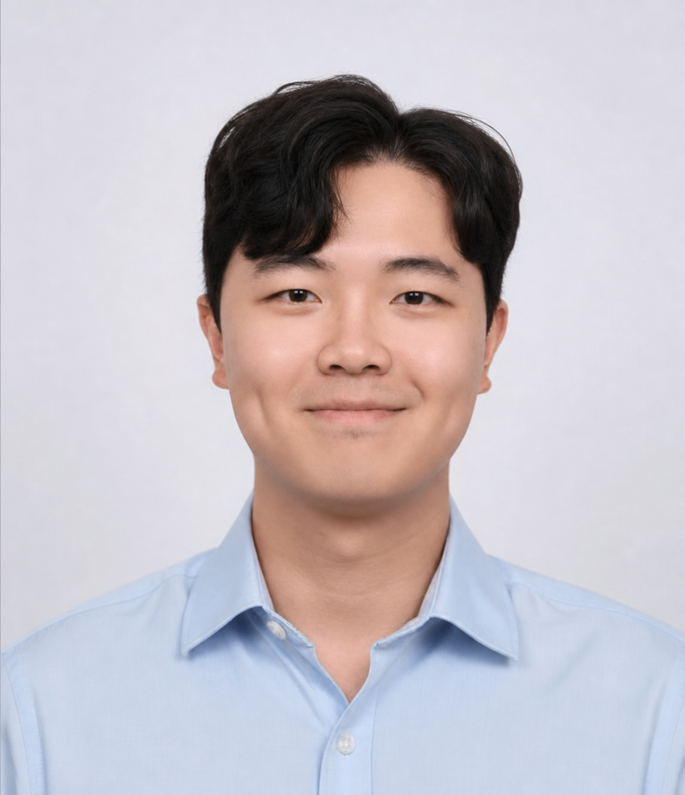
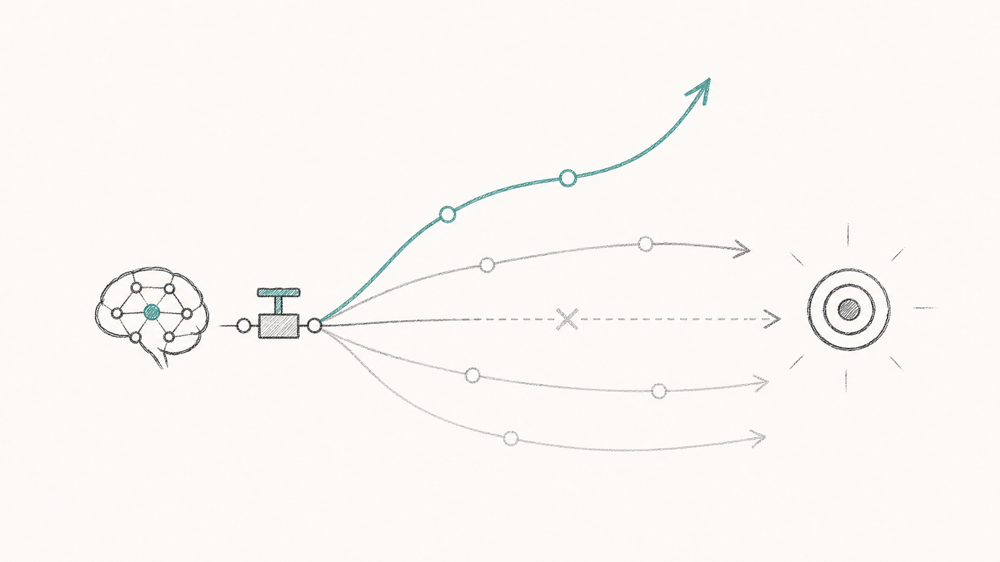
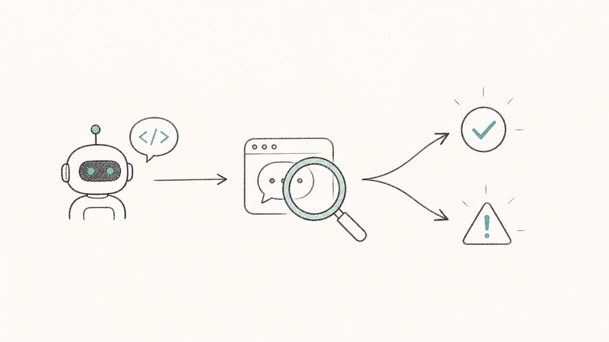
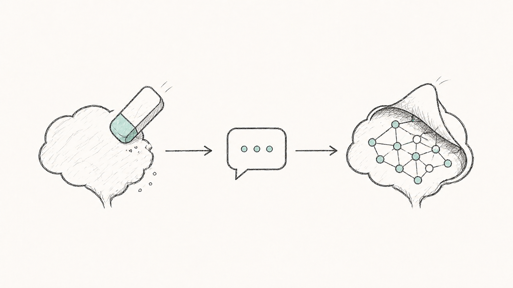
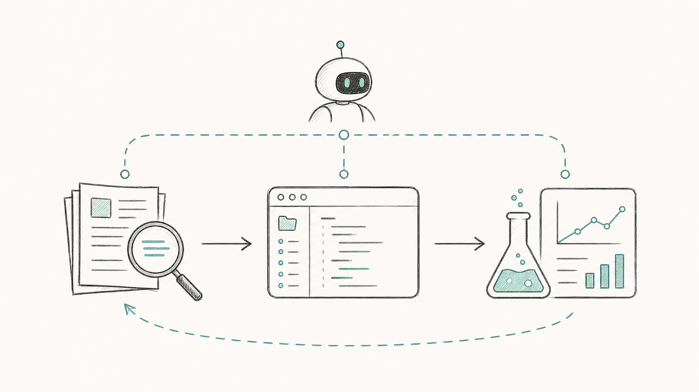

I work on ensuring that AIs remain beneficial and aligned with human values as they become more capable. My research focuses on developing methods for understanding, evaluating, and controlling advanced AI systems. I'm particularly interested in AI R&D automation and threat models posed by it, as well as alignment techniques leveraging high-compute RL to develop mitigations that scale to superintelligence.
I am currently a MATS scholar researching exploration hacking and automated alignment auditing, mentored by David Lindner, Roland Zimmermann (Google DeepMind AGI Safety and Alignment), and Scott Emmons (Anthropic Alignment Science).
Previously, I spent 6 years as a quantitative researcher on Wall Street. I received my MSc in Statistics and Machine Learning (with Distinction) from the University of Oxford, where I was supervised by Prof. Yee Whye Teh and Prof. Benjamin Bloem-Reddy.
For a full list of publications, see my Google Scholar.



